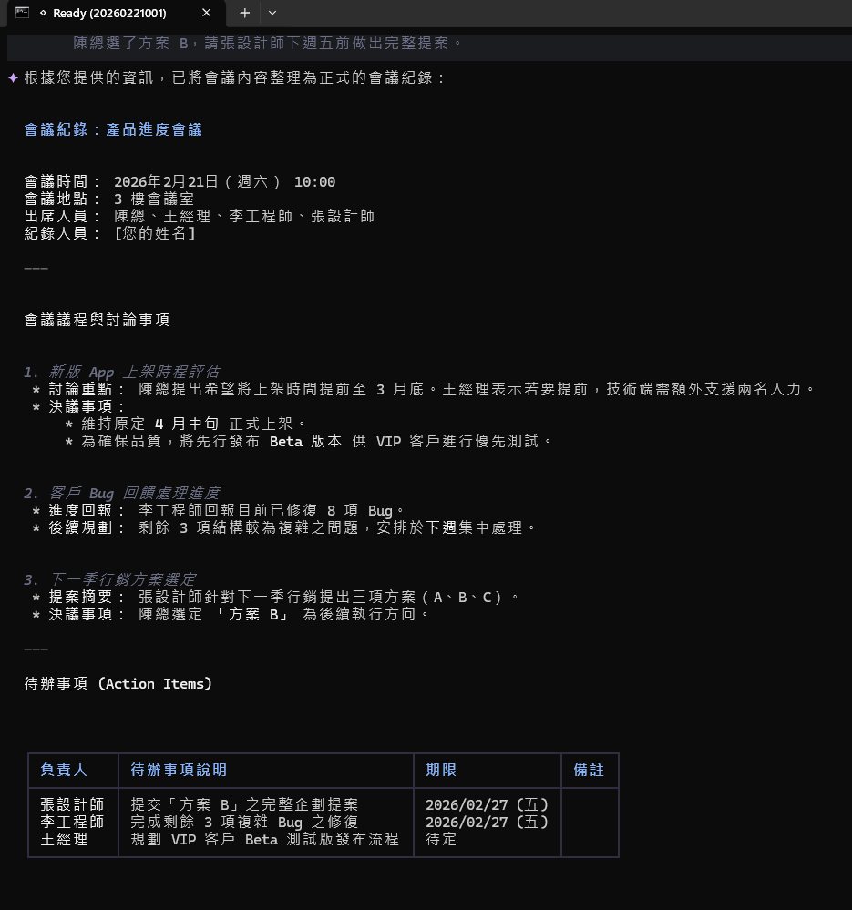
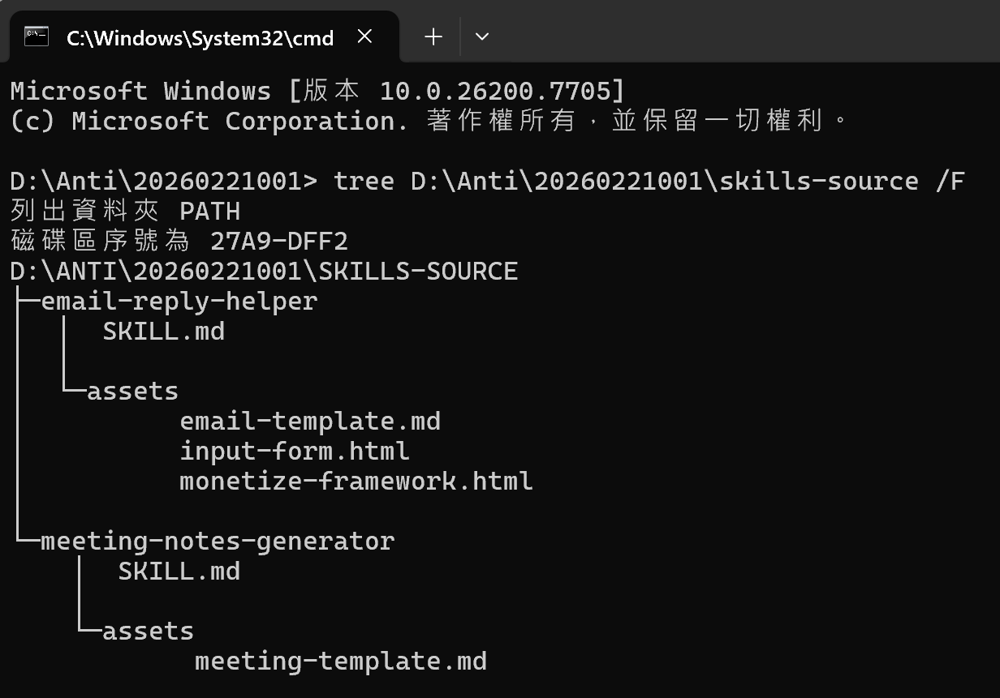

你的 AI Skill 作品
動手創建你自己的 Skill，展示你的作品，通過認證測驗取得證書
📋 實作範例：會議紀錄產生器
在進入自由挑戰之前，先看看另一個完整的 Skill 範例——會議紀錄產生器。它的結構跟 Email 回覆助手完全一樣，但解決的是不同的工作場景。
📦 需求規格
| 項目 | 內容 |
|---|---|
| Skill 名稱 | meeting-notes-generator |
| 功能 | 將會議逐字稿或口語摘要轉換為結構化會議紀錄 |
| 輸入 | 會議逐字稿、重點摘要、與會人員名單 |
| 輸出 | 標準會議紀錄（含議題、決議、待辦事項表格） |
🎯 核心設計：四步驟流程
Step 1：資訊收集
Ask user 提供會議日期、與會人員、會議主題。缺少資訊就先問清楚。
Step 2：內容分析
識別討論議題、提取決議事項、歸類待辦事項。把口語化的內容結構化。
Step 3：產生紀錄
MUST 包含所有決議、MUST 標註負責人和期限、NEVER 遺漏行動項目。
Step 4：品質檢查
確認完整性、待辦事項有負責人、格式統一、用語正式、內容準確。

🧪 會議紀錄測試結果
💬 測試輸入（口語化的會議摘要）
參加的人有：陳總、王經理、李工程師、張設計師。
主要討論了三件事：
1. 新版 App 的上架時間...決定維持 4 月中上架，但先做 Beta 版
2. 客戶回饋的 Bug 列表...已修 8 個，剩 3 個下週處理
3. 下一季的行銷方案...選了方案 B，張設計師下週五前做完整提案」
📄 AI 產出的結構化紀錄包含
會議基本資訊
日期時間、地點
主持人、與會人員
全部自動格式化
三個議題
每個議題的
討論重點 + 決議內容
條理分明
待辦事項表格
負責人、截止日期
優先級（🔴🟡🟢）
一目了然

🎯 實戰挑戰任務
現在輪到你了！選擇一個挑戰，動手把你的專業知識變成 AI Skill。你可以修改範例，也可以完全從零開始：
Email 回覆助手
改成你的行業版本——教育、醫療、法律、電商、製造業。讓 AI 用你的專業語言和行業規範回信。
難度：⭐ 入門（有範例可參考）
會議紀錄產生器
建立你的版本——加入你公司的會議紀錄格式、專屬表頭、自訂待辦追蹤模板。
難度：⭐ 入門（有範例可參考）
報告產生器
建立專屬報告格式的 Skill——週報、月報、專案進度報告，一鍵生成符合公司規範的文件。
難度：⭐⭐ 中等（需要自行設計結構）
自由發揮
把你最常做的工作流程變成 Skill！最有價值的 Skill 來自你的日常經驗。
難度：⭐⭐⭐ 挑戰（完全原創設計）
🔨 動手做！實作時間
選好挑戰了嗎？按照以下步驟，一步步完成你的 Skill：
建立資料夾結構
在 Antigravity 的 .agent/skills/ 下建立新資料夾，例如 my-skill/，裡面建立 SKILL.md 檔案。
撰寫 YAML Frontmatter
在 SKILL.md 最上方加入 --- 區塊，填入 name 和 description。描述要精準，讓 AI 知道何時該啟用。
撰寫五大章節
依序完成：前置檢查（Ask user 需要什麼資訊）、執行步驟（Step 1, 2, 3...）、例外處理、安全規則（MUST/NEVER）、輸出格式。
實際測試
在 Antigravity 或 Claude Code 中實際跑一次，看看 AI 的輸出是否符合預期。特別測試防呆規則是否有效。
調整優化
根據測試結果調整 SKILL.md 的內容。常見問題：描述太模糊、步驟不夠具體、缺少邊界條件處理。
email-reply-helper 的範例檔案。記得：先求有、再求好，不需要第一次就完美！
🎤 成果分享指引
完成 Skill 後，跟大家分享你的作品！以下四個問題可以幫助你組織分享內容：
你的 Skill 解決什麼問題？
針對什麼工作場景？原本這個任務需要多少時間？用了 Skill 之後節省了多少？效果如何？
你設計了哪些防呆規則？
用了哪些 MUST / NEVER / Check if / Ask user？這些規則防止了什麼問題？有沒有特別有價值的規則可以分享？
在哪個平台測試成功？
Antigravity、Claude Code、還是 Gemini CLI？測試過程中有遇到什麼問題嗎？怎麼解決的？
未來想怎麼擴展？
這個 Skill 還可以怎麼改進？能不能跟其他 Skill 串接？能不能做成生成器表單讓更多人使用？
📁 Day 1 最終成果結構
經過一天的學習與實作，你的專案資料夾應該長這樣：
├── .agent/ ← Antigravity Skills 目錄
│ └── skills/
│ ├── email-reply-helper/
│ │ ├── SKILL.md ← Email 回覆 Skill
│ │ └── assets/
│ │ └── email-template.md
│ └── meeting-notes-generator/
│ ├── SKILL.md ← 會議紀錄 Skill
│ └── assets/
│ └── meeting-template.md
├── .claude/ ← Claude Code Skills 目錄
│ └── skills/
│ ├── email-reply-helper/
│ └── meeting-notes-generator/
└── CLAUDE.md ← 全域設定檔
sync-skills.sh 腳本可以一鍵將 Skills 從 .agent/skills/ 同步到 .claude/skills/，確保兩個平台的 Skill 內容完全一致。

🎓 課程總結
恭喜你完成精華版課程！讓我們回顧今天學到的所有技能：
- ✅ AI Skill 概念與三大平台——理解 Skills 是什麼、為什麼重要、在 Antigravity / Claude Code / Gemini CLI 上如何使用
- ✅ SKILL.md 三層架構與五大章節——掌握 Skill 檔案的完整結構規範（元資料、指令、資源）
- ✅ 動手寫出可執行的 Skill——從 Email 回覆助手範例出發，修改成自己的專業版本
- ✅ 在 Antigravity / Claude Code 跑起來——實際部署到平台，並用真實場景測試 Skill 效果
- ✅ 防呆機制 MUST / NEVER——讓 Skill 更可靠，防止 AI 暴走或做出不該做的事
- ✅ 流程變現五層架構——從核心知識 ➔ 流程拆解 ➔ SKILL.md ➔ 生成器 ➔ AI 工作系統的完整路線圖
📋 認證測驗說明
完成課程後，進行認證測驗來驗收學習成果！通過即可獲得「倉勳科技學院」認證證書。
📚 測驗範圍
| 範圍 | 重點 |
|---|---|
| Part 1-2 | AI Skill 概念、三層架構、SKILL.md 五大章節 |
| Part 3-4 | YAML Frontmatter、關鍵字（MUST/NEVER）、Antigravity 部署 |
| Part 5-6 | Claude Code 設定、跨平台部署、Skill 串接 |
| Part 7-8 | 防呆機制、AI 生成器、流程變現五層架構 |
感謝參與！
你已經掌握了 AI Skill 的核心技能。
從今天開始，讓 AI 照你的方式做事！
講師：曾慶良（阿亮老師）
AI 技能教學 | 流程變現專家
© 2026 AI Skill 實作課